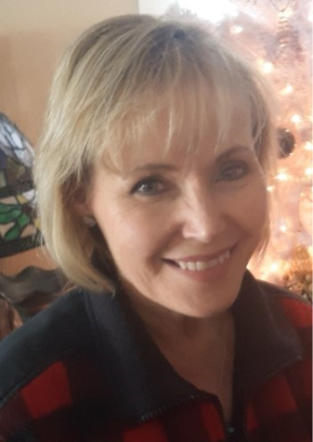

Vicky Donelson | WDD 130
Hello! My name is Vicky Donelson and I am from Bardwell, Kentucky. I enjoy my family which consists of my husband Keith, my daughter Kasey and her two kids Ruby 12 and Adam 10. I like play golf, oil painting, hiking, camping, crafts and reading. I also love computers and technology. I work as a kindergarten teacher's aide. I enjoy working in my current calling with the Young Women. I have held many callings, but my favorite was teaching Seminary.